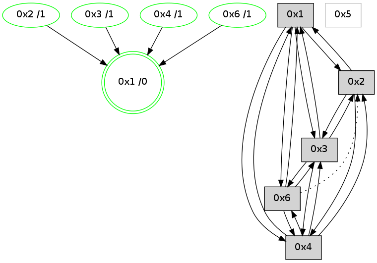

>> << IDX [start] -100 -25 -5 +0 +5 +25 [1225.37698197]
 Previous packets
----------------------------------------------------------------------
1220.354447 beacon01(adaf) #0 coord=01,02,05,03,04,06 cycle=944.0ms assoc
-- color-indic=0 64 dc c3
1220.364409 beacon02(adaf) #0 coord=01,02,05,03,04,06 cycle=944.0ms assoc 64 8d 3c
1220.374408 beacon05(adaf) #0 coord=01,02,05,03,04,06 cycle=944.0ms assoc 64 2b 16
1220.384408 beacon03(adaf) #0 coord=01,02,05,03,04,06 cycle=944.0ms assoc 64 b7 32
1220.394409 beacon04(adaf) #0 coord=01,02,05,03,04,06 cycle=944.0ms assoc 64 11 18
1220.404409 beacon06(adaf) #0 coord=01,02,05,03,04,06 cycle=944.0ms assoc 64 65 04
1220.416104 [Hello(3): seq=982 sym=6,2,1,4 color=2 sysInfo=hasWarning,MaxColorIndicationCalled,ColoringModeIndicationCalled,MaxColorResponseCalled stat=6:3,0,5,0/2:3,0,3,0/1:7,15,0,1/4:11,10,7,2]
1220.420620 [Hello(1): seq=885 sym=2,4,6,3 color=0 sysInfo=hasWarning,MaxColorIndicationCalled,MaxColorResponseCalled,MaxColorRequestCalled,ColoringModeRequestCalled stat=2:12,3,8,0/4:6,0,4,1/6:7,2,13,0/3:4,0,5,1]
----------------------------------------------------------------------
1221.358958 beacon01(adaf) #0 coord=01,02,05,03,04,06 cycle=944.0ms assoc
-- color-indic=0 64 18 ac
1221.368919 beacon02(adaf) #0 coord=01,02,05,03,04,06 cycle=944.0ms assoc 64 49 53
1221.378918 beacon05(adaf) #0 coord=01,02,05,03,04,06 cycle=944.0ms assoc 64 ef 79
1221.388919 beacon03(adaf) #0 coord=01,02,05,03,04,06 cycle=944.0ms assoc 64 73 5d
1221.398920 beacon04(adaf) #0 coord=01,02,05,03,04,06 cycle=944.0ms assoc 64 d5 77
1221.408921 beacon06(adaf) #0 coord=01,02,05,03,04,06 cycle=944.0ms assoc 64 a1 6b
1221.420649 [Hello(4): seq=981 sym=2,1,3,6 sysInfo=hasWarning stat=2:7,0,1,0/1:8,11,1,0/3:8,0,7,1/6:11,0,5,0]
----------------------------------------------------------------------
1222.363466 beacon01(adaf) #0 coord=01,02,05,03,04,06 cycle=944.0ms assoc
-- color-indic=0 64 55 ab
1222.373428 beacon02(adaf) #0 coord=01,02,05,03,04,06 cycle=944.0ms assoc 64 04 54
1222.383427 beacon05(adaf) #0 coord=01,02,05,03,04,06 cycle=944.0ms assoc 64 a2 7e
1222.393428 beacon03(adaf) #0 coord=01,02,05,03,04,06 cycle=944.0ms assoc 64 3e 5a
1222.403429 beacon04(adaf) #0 coord=01,02,05,03,04,06 cycle=944.0ms assoc 64 98 70
1222.413429 beacon06(adaf) #0 coord=01,02,05,03,04,06 cycle=944.0ms assoc 64 ec 6c
1222.425117 [Hello(3): seq=983 sym=6,2,1,4 color=2 sysInfo=hasWarning,MaxColorIndicationCalled,ColoringModeIndicationCalled,MaxColorResponseCalled stat=6:4,0,5,0/2:3,0,3,0/1:8,15,0,1/4:11,10,7,2]
1222.428544 [Hello(1): seq=886 sym=2,4,6,3 mpr= color=0 sysInfo=hasWarning,MaxColorIndicationCalled,MaxColorResponseCalled,MaxColorRequestCalled,ColoringModeRequestCalled stat=2:13,3,8,0/4:6,0,4,1/6:7,2,13,0/3:4,0,5,1]
----------------------------------------------------------------------
1223.367972 beacon01(adaf) #0 coord=01,02,05,03,04,06 cycle=944.0ms assoc
-- color-indic=0 64 91 c4
1223.377933 beacon02(adaf) #0 coord=01,02,05,03,04,06 cycle=944.0ms assoc 64 c0 3b
1223.387933 beacon05(adaf) #0 coord=01,02,05,03,04,06 cycle=944.0ms assoc 64 66 11
1223.397933 beacon03(adaf) #0 coord=01,02,05,03,04,06 cycle=944.0ms assoc 64 fa 35
1223.407933 beacon04(adaf) #0 coord=01,02,05,03,04,06 cycle=944.0ms assoc 64 5c 1f
1223.417935 beacon06(adaf) #0 coord=01,02,05,03,04,06 cycle=944.0ms assoc 64 28 03
1223.429644 [Hello(4): seq=982 sym=2,1,3,6 sysInfo=hasWarning stat=2:7,0,1,0/1:9,11,1,0/3:9,0,7,1/6:11,0,5,0]
1223.433583 [STC(1) #0.219 new-neigh,tree-change,inconsistent-stability,stable,to-color d=0]
----------------------------------------------------------------------
1224.372475 beacon01(adaf) #0 coord=01,02,05,03,04,06 cycle=944.0ms assoc
-- color-indic=0 64 dd 74
1224.382436 beacon02(adaf) #0 coord=01,02,05,03,04,06 cycle=944.0ms assoc 64 8c 8b
1224.392436 beacon05(adaf) #0 coord=01,02,05,03,04,06 cycle=944.0ms assoc 64 2a a1
1224.402437 beacon03(adaf) #0 coord=01,02,05,03,04,06 cycle=944.0ms assoc 64 b6 85
1224.412437 beacon04(adaf) #0 coord=01,02,05,03,04,06 cycle=944.0ms assoc 64 10 af
1224.422437 beacon06(adaf) #0 coord=01,02,05,03,04,06 cycle=944.0ms assoc 64 64 b3
1224.434001 [STC(4)->1 #0.219 new-neigh,tree-change,inconsistent-stability,stable,to-color d=1]
1224.437988 [STC(2)->1 #0.219 new-neigh,tree-change,inconsistent-stability,stable,to-color d=1]
1224.441209 [TreeStatus(2)-.->1 #0.219 new-neigh,tree-change,inconsistent-stability,stable child=1]
1224.445438 [STC(3)->1 #0.219 new-neigh,tree-change,inconsistent-stability,stable,to-color d=1]
1224.447092 [Hello(1): seq=887 sym=2,4,6,3 color=0 sysInfo=hasWarning,MaxColorIndicationCalled,MaxColorResponseCalled,MaxColorRequestCalled,ColoringModeRequestCalled stat=2:13,3,8,0/4:6,0,4,1/6:7,2,13,0/3:4,0,5,1]